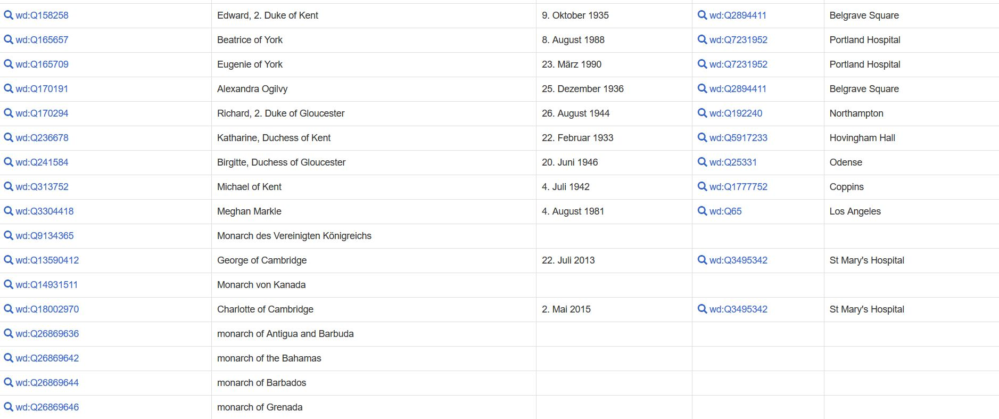
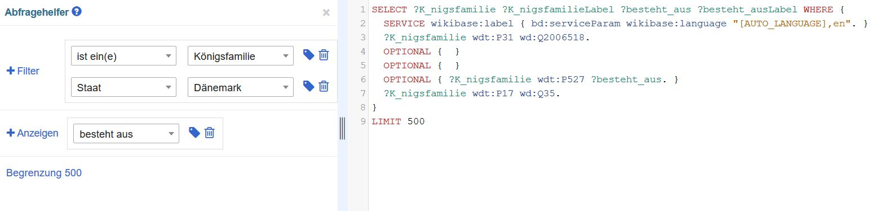

Was ich gelernt habe: man kann Wikidata ganz verschieden Nutzen
Metadaten anreichern mit Wikidata, Query Service und Abschluss
Nach der kurzen Nachbesprechung zu gestern – Herr Lohmeier hat das Problem mit dem Konfiguartionsfenster gefunden – erläuterte er noch einige Möglichkeiten für Server Software, die wir in Zukunft haben. Er zeigte uns auch, wie wir einen Root-Server mit Digitalocean aufsetzen können, was ziemlich simpel und einfach aussah. Die Virtual Box kenne ich noch vom Modul Wirtschaftsinformatik im ersten Semester her.
Anschliessend schauten wir uns die Metadaten-Anreicherung anhand von WikiData an. In OpenRefine kann man zu seinen
eigenen Daten die Daten aus WikiData hinzufügen. Anhand einer Übung konnten wir das gleich selbst ausprobieren.
Ausnahmsweise funktionierte das ohne Probleme. Eine wirklich geniale Möglichkeit, beispielsweise Katalogisate einfach
anzureichern oder LinkedData voranzutreiben. Nach der Übung mit OpenRefine lernten wir noch den Wikidata Query Service
kennen. Mit SPARQL kann man das komplette Wikidata durchsuchen und filtern. Dazu lösten wir ein Tutorial um zu lernen, wie
genau das funktioniert.
Als Abschluss besprachen wir noch die Unterrichtsbeurteilung, welche sehr positiv ausfiel. Und damit ist dieses Modul
auch schon beendet.
Nach dem halben Unterrichtstag experimentierte ich später selbst noch mit dem Query Service herum. Da ich absolut keine Ahnung hatte, nach was ich in Wikidata suchen könnte – wie immer, wenn einem alle Möglichkeiten offen stehen – liess ich mich von meiner Umgebung inspirieren. Da ich im Zug sass, sah ich mich ein bisschen um. Eine Frau schräg gegenüber von mir las ein Magazin, die Titelstory bildete den Buckingham Palace ab. Also suchte ich in Wikidata nach Queen Elizabeth II. und fand heraus, dass man nach der ganzen britischen Königsfamilie suchen kann. Dazu wollte ich nur die weiblichen Mitglieder und deren Geburtsdatum sehen. 
Interessanterweise, wenn man die Query mehrmals verändert, verändern sich auch die Ergebnisse. In einem zweiten Schritt suchte ich nach der britischen Königsfamilie, Geburtsdatum und dem Geburtsort. Mir wurde eine unvollständige Liste angezeigt (die jüngsten Mitglieder fehlten). Als ich dann den Filter weiblich wieder einfügte, tauchten diese dann plötzlich auf. Wieder herausgenommen, wird mir plötzlich eine Ergebnisliste von allen angezeigt aber noch zusätzlich mit den weiteren Titeln der Queen (vermute ich).
Wenn man nur nach Königsfamilie sucht, werden nicht alle Königsfamilien aus Europa angezeigt, dafür aber bereits untergegangene Dynastien. Fügt man bei der Anzeige «besteht aus» hinzu, werden alle Mitglieder der schwedischen Königsfamilie angezeigt, einige wenige der britischen (obwohl sie im Wikidata-Eintrag alle in der «has part» Tabelle  stehen) und alle andern sind weg. Beispielsweise die dänische Königsfamilie hat auch eine Liste aller Mitglieder, sie werden aber nicht angezeigt. Am Limit liegt es nicht, als Test habe ich 500 eingestellt, ergab gleich viele Ergebnisse wie mit 100. Füge ich jedoch den Filter Staat – Dänemark ein, werden alle 15 Mitglieder angezeigt. Obwohl ich mir diese unterschiedlichen Anzeigen nicht erklären kann, finde ich die Wikidata Query sehr faszinierend und es macht Spass, damit herum zu probieren und testen, was möglich ist und was nicht.